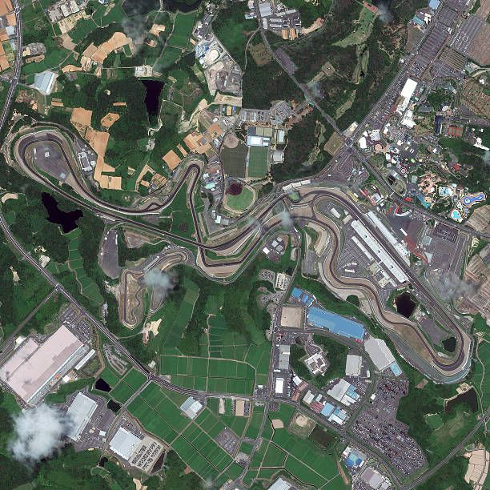

Suzuka International Racing Course

Technical Details
Location: Suzuka, Japan
Length: 5.807 km
Laps: 53
First GP: 1987
Curiosities
Suzuka is one of Formula 1’s most iconic and historic circuits, famous for its figure-eight layout. Built as a Honda test track in the 1960s, it became a cornerstone of Japanese motorsport. It is widely loved by drivers for its technical challenge and flow, producing legendary championship-deciding moments. The circuit is deeply associated with Honda’s F1 legacy.